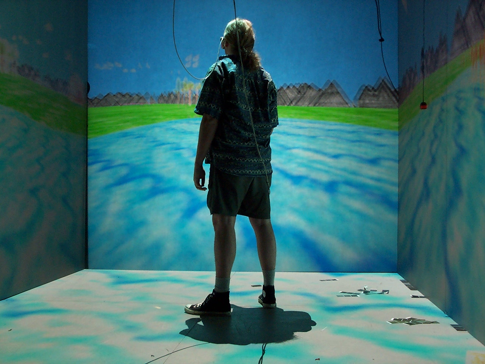
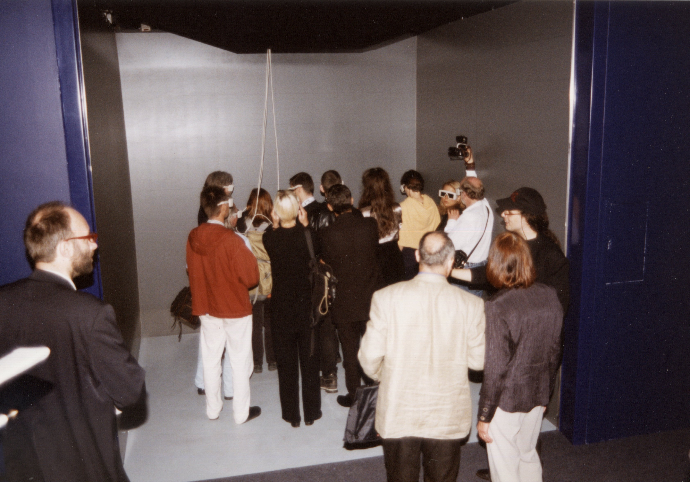

CAVE Automatic Virtual Environment
The first room-scale VR — no headset, just a room you walked into

Overview
The CAVE Automatic Virtual Environment was the first room-scale, projection-based immersive VR system, developed at the Electronic Visualization Laboratory (EVL) at the University of Illinois at Chicago and first demonstrated at SIGGRAPH 1992. It was the PhD dissertation of Carolina Cruz-Neira. The name is a recursive acronym and a reference to Plato's allegory of the cave — an explicit meditation on perception, illusion, and reality.
The CAVE was a 10 ft × 10 ft × 9 ft cube. Three walls used rear-projection and the floor used front-projection, with high-resolution CRT projectors casting stereoscopic images onto each surface. The user wore active stereo LCD shutter glasses synchronized with the projectors, and a Polhemus electromagnetic tracker followed head position so the computer could render the scene from the correct perspective in real time. A wand with 3 buttons and a pressure-sensitive joystick provided navigation and manipulation input.
Unlike head-mounted VR systems of the era, the CAVE let users walk naturally within the room, see their own hands and bodies, and collaborate with 3–4 other people who could see one another's facial expressions and gestures. The system ran on four Silicon Graphics workstations networked together. The demonstration at SIGGRAPH 1992 showed a real-time molecular dynamics visualization and an architectural walkthrough. The CAVE spawned hundreds of installations worldwide and established a paradigm of immersive display that remains influential today.
Deep dive
The CAVE was Carolina Cruz-Neira's PhD dissertation at the University of Illinois at Chicago, under advisors Thomas DeFanti and Dan Sandin. DeFanti and Sandin had co-founded EVL in the 1970s as a pioneering computer graphics and video art lab. Cruz-Neira's insight was that head-mounted displays — the dominant VR paradigm of the late 1980s — were isolating, uncomfortable, and limited in field of view. She proposed turning the room itself into the display.
The CAVE's defining interaction paradigm was 'bring your own body.' Users walked into the cube unencumbered — no HMD, no cables dragging from their head. The tracked viewpoint rendered correct perspective from wherever they stood, supporting natural proprioceptive walking within the 10-foot volume. A hand-held wand provided 3-button interaction. Multiple users could share the space simultaneously, seeing each other's real bodies inside the virtual environment — a form of co-located collaboration that HMD systems could not match. This was neither desktop computing nor head-mounted VR; it was a third category: room as interface.
The original CAVE used four Electrohome Marquee 8000 CRT projectors (one per surface), active stereo LCD shutter glasses, and Polhemus electromagnetic tracking. Four Silicon Graphics VGX workstations — one master and three rendering slaves — were synchronized via Ethernet networking and hardware genlock. The software framework was written in C with OpenGL and later formalized as the CAVELib API. The frame was built from non-magnetic wood to avoid interference with the electromagnetic tracker. The whole system cost roughly a million dollars.
The CAVE design became a standard in VR labs worldwide. Hundreds of CAVE and CAVE-like installations were built at universities, engineering companies, and museums throughout the 1990s and 2000s. It spawned derivative systems: the ImmersaDesk (single-screen drafting table format), the Infinity Wall (large conference-room display), and eventually CAVE2 (2012, a 320-degree cylindrical LCD-panel system also from EVL). Carolina Cruz-Neira received the IEEE VGTC Virtual Reality Technical Achievement Award in 2007 and was elected to the National Academy of Engineering in 2018.
Team & pioneers
- Carolina Cruz-Neira. Lead inventor. The CAVE was her PhD dissertation. Now at University of Central Florida. National Academy of Engineering (2018).
- Daniel J. Sandin. Co-inventor, video artist and physicist. Co-founded EVL. Designed projection geometry and image processing.
- Thomas A. DeFanti. Co-inventor, PhD advisor to Cruz-Neira. Co-founded EVL. Computer graphics pioneer (created GRASS language).
- Robert V. Kenyon. Co-author on original CACM 1992 paper. Contributed psychophysics and human factors expertise.
- John C. Hart. Co-author on original CACM 1992 paper. Contributed rendering algorithms.
Media

Sources
- Cruz-Neira et al., 'The CAVE: Audio Visual Experience Automatic Virtual Environment,' Communications of the ACM, June 1992
- Wikipedia: CAVE Automatic Virtual Environment
- Wikipedia: Carolina Cruz-Neira
- EVL Publications Archive (1992–1993)
- DeFanti, Sandin, Cruz-Neira, 'A Room with a View,' IEEE Spectrum, October 1993
- Johnson et al., 'Electronic Visualization Laboratory's 50th Anniversary Retrospective,' PRESENCE, 2024